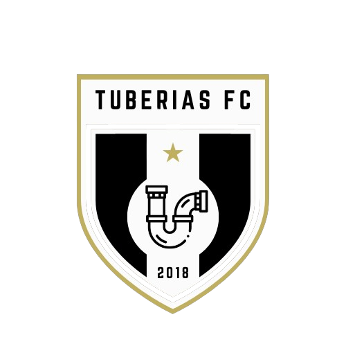

<div class="container my-5">
    <div class="d-flex justify-content-center align-items-center row text-white">
        <div class="col-lg-6 mb-4">
            <h1 class="display-4 titulo">¿Quiénes Somos?</h1>
            <hr class="bg-light">
            <p class="lead">Tuberías FC</p>
            <p>
                Fundado en 2018, Tuberías FC es un equipo de fútbol sala apasionado por el deporte y la competencia.
                Nuestro equipo está compuesto por jugadores dedicados y talentosos que comparten una fuerte camaradería
                y un espíritu de lucha incansable.
            </p>
            <p>
                Desde nuestros humildes comienzos, hemos crecido y nos hemos fortalecido, logrando importantes victorias
                y dejando una marca en cada torneo en el que participamos. Nos enorgullece no solo nuestro rendimiento
                en la cancha, sino también el compromiso con la comunidad y el respeto por el juego limpio.
            </p>
            <p>
                En Tuberías FC, creemos que el fútbol sala es más que un deporte; es una forma de vida que nos enseña
                valores como el trabajo en equipo, la disciplina y la perseverancia. Únete a nosotros en nuestra
                emocionante aventura y sé parte de la familia Tuberías FC.
            </p>
        </div>
        <div class="col-lg-6">
            
        </div>
    </div>
</div>